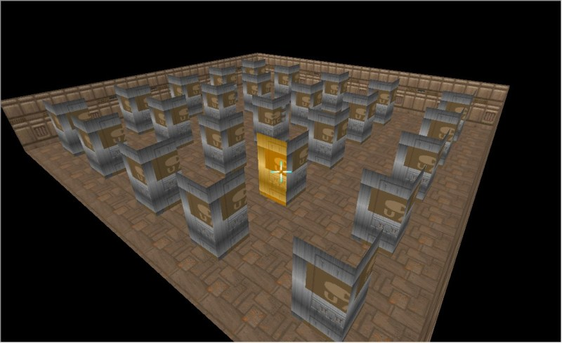
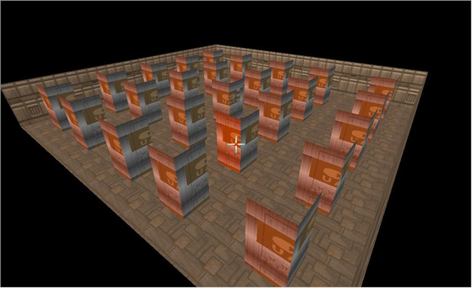
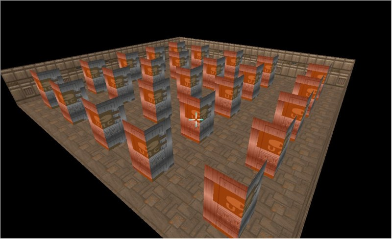

动作名称：贴图自动对齐到所选对象（X）（Auto-align Textures to Selection (X)）、贴图自动对齐到所选对象（Y）（Auto-align Textures to Selection (Y)）、贴图自动对齐到所选对象（X 和 Y）（Auto-align Textures to Selection (X and Y)）
动作类别：视觉模式
默认按键：无
这些动作会将未选中的贴图对齐到已选中的贴图。
假设你有一个布满柱子的房间，你想将贴图对齐到所有柱子上：

选中每个柱子的一个侧面：

然后使用“贴图自动对齐到所选对象（X）”动作：
